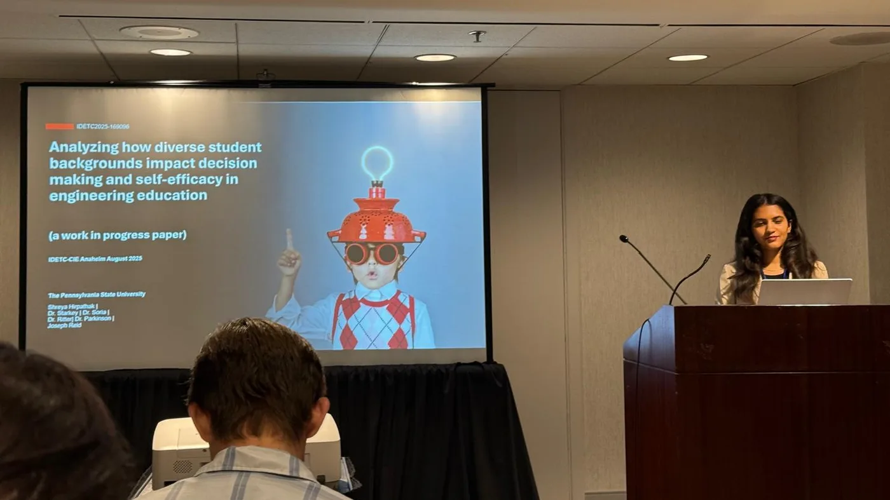
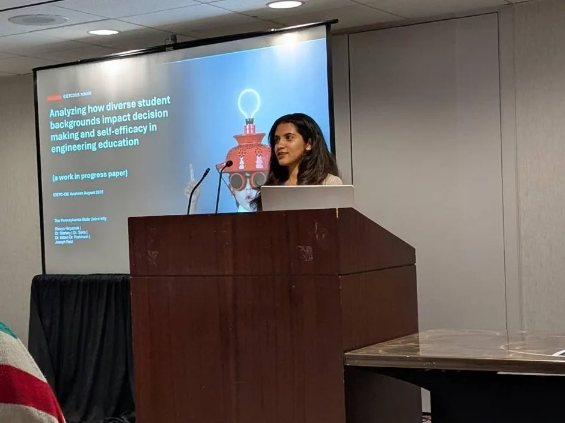

How students' backgrounds affect makerspaces
My M.S. thesis, the Makerspace Self-Efficacy Scale (MSES): who feels confident making things, and why.
of scale items validated by confirmatory factor analysis (16 of 17)
Result · MSES, IDETC-CIE 2026

Understanding how demographics affect experiences.
Question
How do students' backgrounds shape their confidence, decisions and use of makerspaces?
What I did
Designed a two-round survey (1,910 students), led development of the 17-item MSES as lead author, validated it with CFA on 1,190+ responses, and applied IRT.
Outcome
A validated scale, 2 background factors flagged for system-level improvement, and 2nd place Best Paper at IDETC-CIE 2026 and a nomination for ASME's special edition journal.
The existing instruments weren't measuring the right thing.
Makerspaces build more than technical skills. They foster confidence, engineering identity and belonging. But existing self-efficacy scales (SEED, EMSE, ISE, CESES) were designed for broad engineering contexts and don't capture the full process of making.
A context-specific instrument was needed to measure student confidence across each phase of a makerspace project. The MSES is used to analyse self-efficacy before and after a makerspace activity, and those measurements are correlated with demographic data (gender, first-generation status, race/ethnicity) to understand how background shapes the experience.
- How confident do students feel across each phase of making?
- How does that confidence change after a hands-on makerspace project?
- How do students' backgrounds relate to their confidence and experience?
Five phases, from survey to correlation.
Two years, one question, three stages.
- Joined the labGraduate student researcher, Penn State College of Engineering
- Two survey rounds1,910 first-year engineering students
- First stageIDETC-CIE abstract, Anaheim: backgrounds, decisions and confidence
- Scale built & validated17 items · CFA on 1,190+ responses · IRT flags 2 background factors
- CERS symposiumThe scale, framed through UX research
- 2nd place Best PaperIDETC-CIE, Houston · nominated for ASME's special edition journal
Hirpathak, S., et al. “Creating a MSES: Developing the Makerspace Self-Efficacy Scale.” IDETC2026-190931.ASME IDETC-CIE 2026 · Houston, TX · 2nd place Best Paper · nominated for ASME's special edition journal


Self-efficacy is “does the user feel capable?”, measured properly.
Feel it from the participant's side
4 of the 17 real MSES itemsHow certain are you about each statement?
I can assemble things.
I can use makerspace tools to build things.
I can identify a design need.
I can improve a design after testing it.
Build the right instrument.
When off-the-shelf measures don't fit the context, you design one and validate it. Here, CFA confirmed 16 of 17 items.
Segment before you generalise.
Averages hide the people a product quietly excludes. IRT surfaced 2 background factors that need system-level fixes, not individual ones.
Measure change, not snapshots.
Pre/post designs show whether an experience actually moved the needle. It's the same logic as a before/after usability benchmark.
Understanding users' backgrounds and lived experiences is foundational to designing inclusive and effective systems.CERS 2026 · research talk
Where this goes next.
The scale is validated and the two background factors are identified. Next I'd pair those numbers with qualitative interviews to understand why those groups feel less confident, so the findings turn into concrete changes to makerspace onboarding, tools and support.
Innovation vs habit →